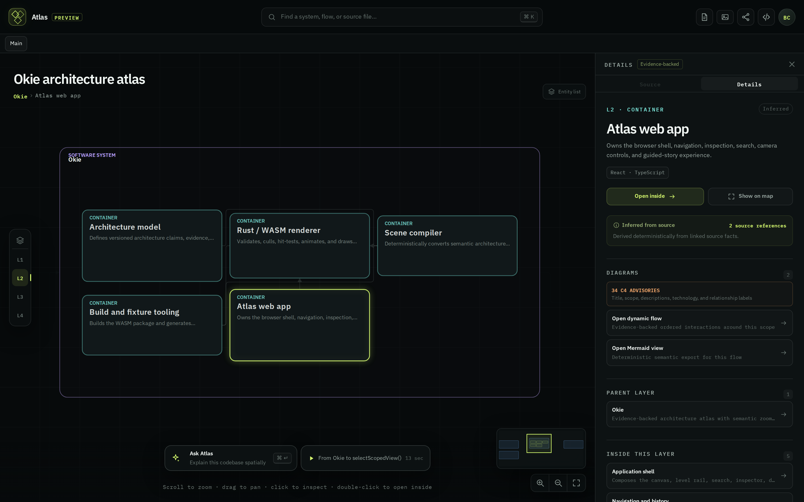
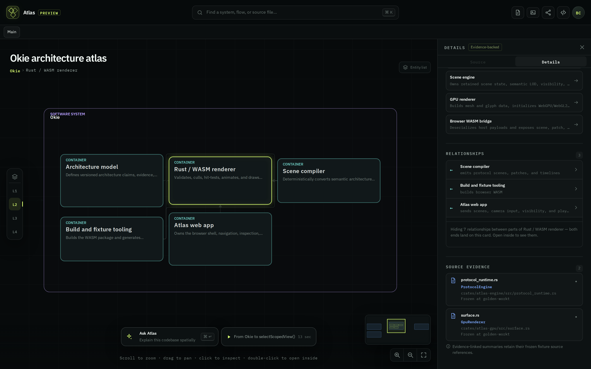

The inspector has two states today: 376 px open, or gone. Open, it takes a quarter of the window and
runs the same five-section stack — Diagrams, Parent layer, Inside this layer, Relationships, Source
evidence — at identical weight whether the node has one relationship or seventy. Closed, you lose the
evidence that makes the map trustworthy. Neither state is right for reading source, which is the one job
that actually wants width.
The proposal is three states on one seam, with Peek as the default.
02-inspector-details.png and 07b-relationships-inspector.png · screenshots


Proposed state 1 of 3 — Peek (default, 232 px)
Canvas keeps 85% of the width · answers “what is this and where does it sit”
◇ Atlas PREVIEW
⌕ Find a system, flow, or source file… ⌘K
⤓↗BC
Main
Okie architecture atlas
Okie · Rust / WASM renderer
ContainerRust / WASM rendererValidates, culls, hit-tests, animates, and draws the compiled scene.
ContainerScene compileremits →
ContainerAtlas web app← drives
Architecture model
Build & fixture tooling
+−⤢
Proposed state 2 of 3 — Detail (376 px, on request)
Same width as today · but one section open at a time, and the counts carry the weight
◇ Atlas PREVIEW
⌕ Find a system, flow, or source file… ⌘K
⤓↗BC
Main
Okie architecture atlas
Okie · Rust / WASM renderer
ContainerRust / WASM rendererValidates, culls, hit-tests, animates, and draws the compiled scene.
ContainerScene compiler
Atlas web app
Architecture model
+−⤢
Proposed state 3 of 3 — Read (560 px, source-first)
The only state allowed to take half the window · because reading code is the one job that wants width
◇ Atlas PREVIEW
⌕ Find a system, flow, or source file… ⌘K
⤓↗BC
Main
Okie architecture atlas
Okie · ArchitectureSnapshot
SourceArchitectureSnapshot
SourceArchitectureEntity
ArchitectureStory
+−⤢
Peek is the defaultSelecting a node should cost the canvas 232 px, not 376. Name, one-line summary, three counts, one primary action. That answers the question most selections are actually asking.
Detail opens one section at a timeThe five sections become accordion rows carrying their counts. Relationships 3 of 10 is more useful collapsed than the current always-open list is expanded.
Read is the only wide stateLine 102 is clipped in today's 376 px Source tab (03-inspector-source.png). 560 px fits it. Nothing else earns that width.
Omissions stay visibleThe dashed “7 internal links” row keeps the honesty of today's hidden-relationship notice while costing one row instead of a paragraph.
One seam, three stopsThe existing .details-resizer already drags. Give it three snap points and the states are free — no new surface, no new shortcut to learn.
Canvas floorPeek and Detail keep the canvas above 70% of the window. Only Read is allowed to break that, and only while a source excerpt is open.